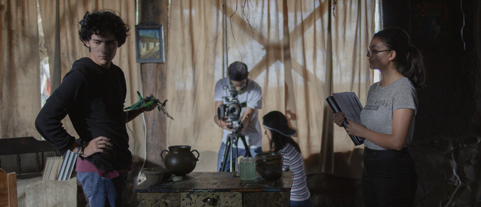

Regresar
Student 1
|

|
Name: Diego Cadena
Age: 22 years old
Color: black
Home: live in the south of Quito
in Chillogallo with your mom
grandmother, uncle and brother
Hobby: listen to music Electronic
Watch tv series
Student Trajectory
Elementary School: Ampetra
High School: Ampetra
University: ESPE
Additional Information
He chose the Tics career because his uncle
studied systems but in the future he wants
to pursue a career in cinema
He applied to the Central University for the
Arts degree but the score was not enough
The Film career at UDLA is very expensive,
so he followed the Tics career at ESPE